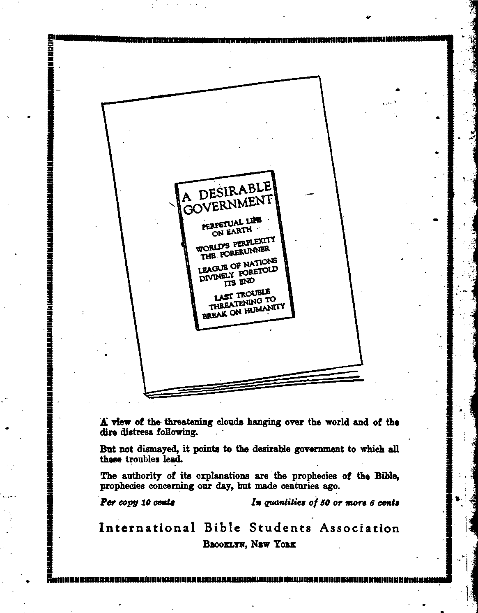

Labob and Economics The New Age and the New Unit
Machinery Eliminating Much Labor
New Order Self-Adjusting by Lore
Social and Educational Bomb Signs or the Times
Finance- -Commerce—Thanspohtauon Slaveet to Monet
Lateb Infoemation Regarding the 1917 Douab Bux
Political—Domestic and Foreign Tn Pbessing Immigration Quebxzow . . . . ,
The Present Immigration Law ..........^ . . . 323
1 America a'Cosmopelitan Country
Frauds against Immigrants ....
Keeping the Germans Out or Ceylon
Tkavxl and Miscellany The Uplifting or the Canadian Indians....... •
Longing fob the New Dat. • • . • .......... •
Published every other Wedneeday at 18 Concord Street, Brooklyn, N. Y„ U. 8. A*, by WOODWORTH, HUDGINGS A MARTIN
Copartners cod Proprietors Address; 18 Concord Street, Brooklyn, N. U. *. A. CLAYTON J. WOODWORTH . . . Editor ROBERT J. MARTIN . Business Manesss C. E. STEWART .... Assistant Editor WM. F. HUDGINGS . . Sec’y and Trees. Fits Csnts a Copy—81.00 a Ybab Makb RmriTTavcns to THE GOLDEN AGJ Fobbige OrriCBB: Britts*.....34 Craven Terrace, Lancaster Gate, London W. 2
Canadian......... 38-40 Irwin Avenue, Toronto, Ontario
Aostretaetan .......4M Collins Street, Melbourne, Australia
South 4/ricon......• Leiie Street, Cape Town, South Africa
Entered as oeeond-daM matter at Brooklyn, N. Y^ under the Act of March 3. 18T2
Velum* V
Brooklyn* N.Y., Wednesday, February 27, 1924
ON THE subcription list of The Golden Age we have a few full-blooded North American Indians. All the rest of us Americans are immigrants, or we are the near or remote children of immigrants, and hence should be interested in the immigration question. Moreover,-there are indications that this will be one of the outstanding features of the forthcoming presidential campaign, so a consideration of the subject is in order.
The management of the Immigration Bureau is in the hands of the Secretary of Labor, and properly so, we think; for an excess of immigrants immediately affects the labor market, resulting in lower wages, with corresponding disadvantages to workers here, only in part offset by slightly lowered costs of manufactured products which they must use.
Whenever there is an era of depression here in America, there is always a great hue and cry against whatever of liberality may exist in the American immigration policy, sometimes coupled with a demand that all immigration of every sort be shut off for a specified term.
Whenever there is an era of prosperity here, accompanied by the better wages which prosperity brings, there is always pressure from the great employers of labor for a more liberal policy as repects immigrants. Most of the hard and rough work in America is done by “foreigners”, as they are commonly termed.
On one occasion the present Secretary of Labor, Mr. Davis, in an after-dinner speech, said that the reason why he had opened the doors at Christmas time and let in 1,100 immigrants after the quota for the year was full was that he could remember the time when his mother came into America as an immigrant with eight little children, of whom the Secretary himself was one. Sometimes Secretary Davis has to pass upon as many as three hundred appeals in a single day.
A man in his position needs to have a great deal of wisdom and common sense, and should be well endowed with a sense of pity for the unfortunate and sympathy for the poor. Moreover, the laws which he is to administer should have similar characteristics—unfortunately not now the case.
THE present immigration law, passed in May, 1921, and expiring July 1st, 1924, provides that only three percent of the number of foreign-born persons of any nationality living in the United States, according to the census of 1910, can be admitted in any one year; and that not more than twenty percent of the allotment for any one country can be admitted in any one month.
The law was passed in a panic in 1921, at the time when the^ Bolshevism scare was at its height and every immigrant was suspected by some gullible Americans of being intent on overturning the United States Government, This panic was manufactured by big business, with the deliberate intent of using it as a smoke screen behind which to get away with their war loot The tools used were the press, the preachers, and the representatives of the Department of Justice, so-called. The scheme worked pei-fectly, as far as keeping the loot was concerned. The law, while bad in some features, is not so bad in others.
The good features of the law are that it has resulted in a higher grade of immigrants than came before the law went into effect, and it has restricted the newcomers to American shores to such an extent that the labor market has not been affected adversely.
Changes proposed in the law would provide for the admission of immediate relatives who may be in excess of the quotas, in order to avoid breaking up families; discretion to act
humanely in cases where deportation violates common sense; requirement of steamship companies that they assure themselves before sailing that they are not carrying immigrants in excess of quota; and a redistribution of the quotas into ten monthly installments of ten percent each instead of five monthly installments of twenty percent each.
In order to improve the character of the immigrants it has also been proposed to base the allotment on the 1890 census; to restrict the quota to two percent with an additional one percent for selected applicants. The reason for shifting to the 1890 census is to bring in more aliens from the north and west of Europe and less from the south and east.
Before the war Northern and Western Europe provided only fifteen percent of the total immigration, but during the last two years it has run about thirty-five percent. The only persons from whom consuls can legally withhold vis4s are bolshevists, anarchists, and habitual criminals; all the rest of the selection is made on arrival in America.
BIG business wants a hand in formulating any changes that are to be made in the immigration law. Now that the war steals are all safely cached, it does not now need a smoke screen. Hence it would really like to let in a great many more of the kind of hard workers it has used in the past, though it is still timid about letting in anybody who does not believe in the divine right of capital to commit every crime on the calendar.
The United States Chamber of Commerce, so-called, the official spokesman for big business, is willing to let the three percent quota stand as it is now; to this it would add two percent upon a selective basis, making a possible five percent in all. About a year ago the packers and the steel trust had to raise the wages of their men in order to hold them; and straightway the papers began to be flooded with the usual wail of big business that there is a labor shortage which can be overcome only by a more liberal immigration policy. The National Manufacturers' Association openly argues for and urges the granting of permission to import alien labor under contract. This is now illegal
Weary of waiting for labor from Europe, the usual source, big business turned to the southern Negroes, with the result that tens of thousands of them came north to work in the packing houses and the steel mills. It is a wonder that they did not think of Porto Rico and other West Indian islands, where there is such an excess in common labor that the people can < hardly exist. There are no restrictions for bringing in these, except health and ability to read and write.
THE United States long ago decided that it could not assimilate Chinese and Japanese, and accordingly special treaties or agreements have been made with those countries by which their laboring classes are kept from these shores. Objection is made also to aliens from other lands who do not or will not learn the English language, and who merely use America as a place to make money which they plan to spend in later years in the land of their birth. It is stated that one out of every two immigrants to America returns to the old country eventually.
The Mining, and Scientific Press is authority for the statement that when Japan organized her government she wrote to Herbert Spencer, the leading political economist of his time, asking whether or not she should admit foreigners, and the answer was “Emphatically, noF* Spencer advised the Japanese to grant foreigners only bare commercial privileges, to forbid them to own lands, to hold them at arm's length, and to avoid intermarriage—all to prevent the deterioration of the Japanese type. The deterioration of Chaldea, Phoenicia, Carthage, Greece, Rome, and Egypt came about through admixed populations, due to conquest or invasion.
We speak of the art of Greece and Italy, the music of the Germans and the Poles, and the poetry of the English, recognizing that back of these there are the temperamental characteristics of pronounced racial types. But we sometimes forget that Greece is full of Greeks, that Italy is full of Italians, that Germany is full of Germans, that Poland is full of Poles, and England is full of English, while America is full of everything except Americans. Moreover, the melting pot melts poorly.
Nobody could expect very much from a restricted immigration wherein the privilege of the selection of immigrants is left to other nations. Europe is naturally not eager to part with her best citizens. As a result the figures prove that 44.09 percent of the inmates of jails and asylums are children of foreign-born parents. In Michigan one-fourth of the insane persons in the state were born in foreign countries, and their support costs the state $4,000,000 per year.
The Government makes seven classifications of immigrants: Very superior, superior, high average, average, low average, inferior, and very inferior. A checking up of 14,000,000 immigrants shows that there were only 6,000,000 of them in the first four classifications named, while the great number of 8,000,000 were of the low average, inferior, and very inferior types.
WHEN Lloyd George returned to England from America he said of America. that it is infinite, and that if developed to the extent that England is developed it should easily maintain a population of 1,500,000,000. In our opinion the time will come when more than this vast number will live in what is now the United States and Canada. Indeed, we anticipate about twice the number.
The New York Herald recently pointed out that if the entire present population of the world were located in the one state of Texas, and only ten persons were assigned to each acre of land there would still be room in the state for 196,000,000 additional persons. Under these circumstances it is but folly for anybody to talk of overcrowding America at this time; and it does not seem just fair to shut the doors to the worthy and the needy and to say to them: *You shall not come here to make your home."
The Baltimore Swn points out that "by the time an immigrant gets accustomed to the climate he begins to worry about the horde of aliens coming in.” While this may be stretching it somewhat, yet it is a fact that many do not realize the value of hard-working immigrants to a country and are hostile to those who speak a foreign tongue.
The ten million foreign-born now in America, together with those of foreign parentage, represent only one-third of the people of the United States, yet they mine three-fourths of the coal, manufacture three-fourths of the clothing, half of the silk, linen, wool, lace, and embroidered goods, bake more than half of the bread, refine more than half of the sugar and put up half of the canned food.
With the aid of Ampriean capital the foreign-born built the Ameroan railways, and still do half of the maintenance work on both railroads and streets. They also do half of the work in the blast furnaces, in the carpet mills, in the hemp and jute factories, and in the copper, silver, brass, gold, rubber, and leather goods. To shut out immigration altogether, as proposed by some of the wild advocates of narrowmindedness, would put the United States back as much as would a first-class war.
While the inferior rating of many past immigrants is deeply regrettable, yet the.. United States now makes an earnest effort to exclude convicts, except those guilty of political offenses, women imported for immoral purposes, lunatics, paupers, persons afflicted with loathsome or dangerous contagious disease, polygamists, those whose passage has been paid by others unless it can be conclusively shown that they do not belong to any of the excluded classes, epileptics, persons who have been inr sane within five years previous or who have ever had two of more attacks of insanity, professional beggars, anarchists, persons who believe in or advocate the overthrow by violence of government or law, persons attempting to bring in women for immoral purposes, persons deported within a year previous as contract laborers, and persons who cannot read or write.
SOMETHING is to be learned from a consideration of the attitude toward immigrants of other countries which have large areas of undeveloped land and other natural resources, Brazil, “the United States of South America,” is one of these. Brazil pays the passage of immigrants, takes care of them on arrival, transports them free to their destination, provides them with tools and seeds, and supplies them with free medical care for themselves and their families.
Argentine, to the south of Brazil, offers immigrants free land. Chile, to the west of Argentine, offers land and implements. New Zealand, to the west of Chile, offers reduced steamship fares. Australia, to the west of New.
Zealand, pays $60 toward the parage of selected British settlers, and makes an effort to select only such as will stay in the country. It does not want those whose purpose is to hoard their money and return to the old country. To bona-fide settlers it sells land on easy terms and advances money for improvements.
Immigration from North America to Australia in 1921 was 1,577, practically all of whom were from the United States. Australia's total immigration for 1921 was a little in excess of 1.5 percent of her population. The immigration into America at the very height of the flood was only a trifle in excess of one percent. We incline to the thought that the Lord is shaping things so as to bring forward the development of the lands of the southern hemisphere more rapidly.
Canada forbids the entry of any immigrant mechanic, laborer or artisan who possesses less than $250 in his own right, plus transportation to his destination in Canada, plus $125 for each person in his family over eighteen years of age, plus $50 for each child over five and under eighteen years.
The province of Quebec has at least one lecturer touring the New England states, endeavoring to persuade French Canadians to return to Canada. Canada gladly provided a home for forty Swiss farmers who were denied entry to the United States under the three percent quota arrangement
The Canadian Pacific Railway maintains a personally conducted immigrant service direct from Great Britain to the land of their choice and to the very district in which the new settlers will locate. This is an excellent idea, and one worthy of adoption by the United States. The railway sells these settlers land payable over a period of thirty-four years, the first payment not to be made until after two years.
Canada is burdened with the problem of keeping her immigrants in Canada after she gets them; the lure is always southward. She needs desperately to keep them at home if she is to pay the colossal war and railroad construction debts which have been contracted. More people, more taxes paid.
Canada has one growing immigration at which she now looks askance. In 1911 the Chinese population of British Columbia was 19,563; today it is 40,000. There are about 60,000 Chinese in Canada altogether, and about 20,000 Japanese. It is claimed that they monopolize the fishing and garden trucking businesses and have increased the drug traffic.
FOR a hundred years Great Britain has supplied a greater number of new citizens to the United States than has any other country. When the British come here they are always welcome. The language, the ideals, the literature, and most of the customs are the same; and in a few years even the most discerning can distinguish no differences between an immigrant from Britain and a native-born American. There are now 10,000,000 representatives of the British racial group in America. This includes immigrants from Canada. Many of the British immigrants come into the United States via Canada.
It seems too bad that any law should hold up immigration from the British Isles. No matter where they go, Britishers add an element of honesty, courtesy, kindness, courage, that makes them invaluable as citizens. In America they are specially vrelcomed by the people as a whole; and yet the present law keeps many thousands of them away, and works great hardships on many who come. It has happened, not once but several times, that a whole shipload of people, after selling their homes and businesses, and planning to sail at a given date, have been compelled to wait in idleness for two months because the current quota was exhausted. Under the present law only 77,342 immigrants from Britain may enter in each year.
Next to Britain, as a provider of citizens for the United States, has come Germany. There are 9,250,000 of the German racial group in America. When Prince Henry was touring America he asked some American statesman whether he had ever been in Germany and was greatly amused when he received the reply, "Oh, yes! I have been in Milwaukee, St. Louis, and Cincinnati many times.”
Despite all newspaper, political, and pulpit slop to the contrary, the Germans also are valued citizens of the United States. They are law-abiding, industrious, musical, home-loving, educated, and progressive. To have them shut out also seems a crime against the country. The newcomers soon speak a broken English that is highly entertaining and enjoyable to Americans ; and their children, from the moment they begin to attend school, never speak anything but English even in their own homes. Under the present law Germany may send only 67,607 new citizens into the United States each year.
THE third racial group, the Scandinavian, represents a big drop from the British and German figures; yet there are 3,750,000 of this group in America and it is a goodly number. The Scandinavians are like the Germans, highly intelligent, well educated, progressive, Protestants—just the kind of citizens America should welcome with open arms.
Included in the Scandinavians are the Danes. Denmark is a small country, but stands out prominently in American immigration records because of the prison incident. It seems that the Danish prison was overcrowded. An addition was needed, but the funds wherewith to build it were not at the moment in sight, so the Danish government hit upon a more feasible plan. The 700 convicts were all pardoned with the distinct understanding that they should emigrate to America. Tickets were provided, and the whole lot were shipped to make new and better homes for themselves in a new and better land. This was before present restrictions were in force.
Next after the Scandinavians are the Poles, of whom there are 3,000,000 in America, The Poles are naturally bright, but their development has been retarded by the old Czarist regime and by the fact that they are mostly under the influence of the Roman Catholic Church. Under the present law Poland may send in 21,076 new citizens annually, but Poland is attempting to hold as many of her own citizens as possible.
The new country of Czecho-Slovakia, lying on Poland’s southern border, is following Poland’s example of offering inducements to keep her citizens at home, so as to develop her own resources. Czecho-Slovakia may send 14,557 citizens to America each year under the present law.
A Czecho-Slovakian invited to an Americanization conference is reported by The Nation as having said among other things:
"Nothing will make a people ding to their language so much as forcing them in one way or another not to speak it. Some Americans think that you can make people love a country by driving them to it with a dub. If you want us to be Americans, treat us like human beings. Our features may be different from yours, but I guess we also are made in God’s image. Lincoln wouldn’t have been suspicious of us. He would have made us love America by the way he would have treated us. And once people love America by the way they are treated, no one needs to Americanize them.”
That is the way to talk. When the workers in the steel district wanted better living conditions, there were any number of officials ready to commit wilful acts of anarchy against the Czecho-Slovakians in their districts; and now they want to prove to them what nice people we are by teaching them how to spell out English words. Probably they want to teach them how to spell out such words as "Justice” and <rLove.” If the present generation of Czecho-Slovakiana in America never get any farther in their spelling lessons than to be able to spell “B-a-t-s” we should not much blame them.
THE present law, and the proposed changes in it, have in view the restriction of immigration from the southern and eastern countries of Europe, Hungary, Italy, Greece, and Russia. There were probably a quarter of a million people from southern and eastern Europe that would have been glad to come to America in the last year, but were prevented by the quota. For example, Hungary may bring in only 5,638 new citizens each year; yet there are applications for 30,000 American passports on file* enough to fill the quota for more than five years. If the basis is changed to the 1890 census and reduced to two percent, as is proposed, Hungary would be able to send in only 424 persons in a year, and would practically be eliminated as a source of emigration.
Next to Scandinavia, and on a par with Poland, Italy is represented in America by 3,000,000 citizens. Under the present law Italy may bring in 42,057 citizens per year, while the number that wishes to come averages more than 300,000. If the law is modified in the way proposed Italy would be reduced to 3,912 per year* and also virtually eliminated.
There are few Protestants among the Poles* Hungarians, and Italians; criminality runs higher than among the British, Germans, and Scandinavians; and they are harder to lift up to proper citizenship on account of their long submergence under the beclouding, deadening effect of Roman Catholic influence. These are the bedrock reasons for the discriminations against them, and not their industry.
In recent years most of the hard laboring work of America has been done by these three nationalities, and it is work that Americana will not do. The question is as to whether it is better to shut these men out and leave the work undone, or to let them come in and promote material progress while in some other ways they lower the national standards.
The Italians are successful in America. When they first come they will do anything—streetsweeping, rag-picking, whatever may need to be done. In a few years they are often the owners of splendid farms, being adepts in the growing of grapes and other fruits.
Greece is already a small factor as respects American immigration, inasmuch as she may bring in only 3,294 per year, and under the proposed changes would be able to bring in but 47. No objections are raised against the Greeks except by the restaurant and candy kitchen proprietors, whose businesses have suffered severely under Greek competition.
Greece is offering inducements of farms to the people, having passed an act by which large’ land owners may retain only one-third of their estates, while surrendering two-thirds to the uses of the Government for the benefit of the landless and the homeless. Greece would like to send many thousands to America, but is deterred by both American and Greek laws.
The reasons why no immigration is desired from Russia are well understood by all our readers. It is because of the fears of big business that the Russian idea of Bolshevism will spread throughout America. This it will never do so long as more than half of the Americans live in their own homes. The good wages paid during 1923 have done more to kill off Bolshevistic sentiment than all the futile and foolish efforts put forth in recent years to prevent people from studying economic subjects.
Meyer London, the only Socialistic member of Congress, speaking some two or three years ago on the efforts to keep out radicals, said bi tingly and truthfully:
“The fact that there was almost no immigration during the war did not prevent us from importing every abominable idea from Europe. We brought over the idea of deportation of radicals from France, not from the France of Rousseau, Jaures and Victor Hugo, but from the France of the Bourbons. We imported the idea of the censorship of the press and the passport system from Russia, not from the Russia of Kropotkin and Tolstoy, but from the Russia of Nicholas IL We have imported the idea of universal military service from Germany, not from the Germany of Heine, Boerne and Freiligrath, but from the Germany of the Kaiser. Ideas can be neither shut in nor shut out. There is only one way of contending with an idea, and that is the old and safe American rule of free and untrammeled discussion. Every attempt to use any other method has always proven disastrous.”
Egypt may send into the United States only eighteen immigrants a year; Palestine, Fiume, Iceland, Other Asia and Luxemburg may each send in less than 100. Africa, Russian Armenia, Albania, Danzig, Bulgaria, Syria and Spain may each send in less than 1,000; Esthonia, Latvia, Belgium, Portugal, Lithuania, and Turkey may each send in less than 3,000. Greece, Netherlands, Switzerland, and Finland may each send in less than 5,000. Denmark, France, Hungary, Jugoslavia, Austria, and Roumania may each send in less than 8,000. Norway may send 12,202, Sweden may send 20,042, and Russia may send 24,405. The other countries that may send have been already named.
IN THE United States there are now twenty-four percent of all the Jews in the world, seventeen percent of all the Scandinavians, thirteen percent of all the Germans, eight percent of the Poles, the Slovaks and the Finns, seven percent of all the Italians, five percent of the Dutch and the Lithuanians, and three percent of the French and the Greeks.
Talk about a cosmopolitan country! In America we start off with 54,000,000 full-native white Americans and 11,000,000 native colored people. Then we have 6,500,000 children one of whose parents was foreign born, and 14,000,000 both of whose parents were foreign born. And then we have 14,500,000 people of foreign birth. These were the figures some time ago.
Not counting the British, who are really the parent stock, and are not immigrants in the same sense as other nationalities, there were in the United Slates in 1910 persons of foreign birth as follows:
German ........„ ...............................-........2,500,000
Italian ..........................................................1,607,458
Russian .....-.......................................... 1,398,999
Polish................... 1,139,578
In the following statement, several millions of those listed as foreign born are as truly American as those born of native parents; but the statement serves to show how large a proportion of work here is done by persons one or both of whose parents were foreign born, or who were themselves born in other lands.
This statement is an interesting comparison of the native and foreign born populations in the principal industrial states:
|
Native |
Foreign Born | |
|
New York.......... |
______________3,365,000 |
5,735,000 |
|
Pennsylvania..... |
....._...........4,500,000 |
3,200,000 |
|
Illinois ............... |
.....................2.800,000 |
2,900,000 |
|
Massachusetts .... |
...................1,180,000 |
2,220,000 |
|
Ohio —........... |
....... 3.200,000 |
1,600,000 |
|
Michigan............ |
..................1.240,000 |
1,560,000 |
|
Wisconsin .......... |
................... 740,000 |
1,560,000 |
|
New Jersey........ |
...........-.....1,065,000 |
1,435,000 |
|
Minnesota .......... |
.................... 590,000 |
1,485,000 |
|
California ............ |
______1,250.000 |
1,150,000 |
|
Connecticut .._______ |
______ 400,000 |
700,000 |
|
20,330,000 |
23,545,000 |
THE high tides of immigration were about 1850, 1870, 1880, and 1900. The highest peak was reached in 1907, when 1,285,349 were admitted. The fewest arrivals were around 1860, because of the Civil War; 1875, because of business depression here; and other dates when there were relatively few arrivals were 1885, 1895, and 1910, for the same reasons. In the year 1918 only 110,618 immigrants entered the country. This, of course, was due to the war, which did not terminate until November of that year.
Immediately after the war, when it looked for a little time as if some of the American people were in danger of using their brains and making an inquiry into the hundreds of millions and even billions of dollars out of which they had been robbed by the profiteers, and when it was necessary for big business to erect a smoke screen to hide them while they were burying the loot, the press and the pulpit were busily employed, as was also the Department of Justice, in making America a very uncomfortable place for people of foreign birth. During those years immigration was small and emigration large.
The following is an analysis by occupations of those entering and those leaving the United States since the passage of the present immigration law. These statistics show that during the years 1921 and 1922 there was a large loss of laborers; so large, in fact, that now it is not an altogether unusual thing to find native-born white English - speaking Americans actually working with their hands.
1921-1922 Immigration SmigrattaA
No occupations-------------131,050 54,944
Miscellaneous occupations .... 65,032 14,713
Skilled laborers..................... 51,588 17,958
Laborers ................................... 32,726 100,058
Farmers and farm laborers.... 18,205 7,728
Professional ____________ 10,955 3,318
Secretary Davis made the statement a few months ago that there are as many illegal entries into the United States as legal ones, claiming that there are American financiers who are engaged in the work of “bootlegging” immigrants into the country. ,
This would be quite easy. On the Mexican border all that is necessary is to wade across the Rio Grande, or to walk across an imaginary line on the desert. On the Canadian line there are many places where a rowboat could cross and about two thousand miles of land boundary besides.
Despatches tell of a man (location not specified) who had a grocery store with the back door in Canada and the front door in the United States. It is claimed that this man aided hundreds of immigrants to enter the United States illegally.
Florida has done such a business in providing a haven for illegal entries that it has gained the sobriquet of “The Nation’s Back Door,” The entries into Florida come from the Bahamas and from Cuba, the passengers paying from $80 to $2,500 a head for their passage.
A heartless ruse worked many times by the rascals engaged in this traffic is to take a company of passengers out in a boat, carry them around for a day or two, and then land them on an uninhabited stretch of land within a few miles from where they started, falsely telling them that they are in Florida.
If there was ever honor among thieves it seems clear that there is none now. One of the best protections the officers of the law have is that none of these lawbreakers can be trusted. However, a large number is smuggled into Florida and into New York and other Atlantic ports from the rum fleet which lies twelve miles out at sea.
Florida, especially, has a great number of bayous, bays, sounds, coves and inlets, which make it an easy place of debarkation without discovery. Tom’s Bayou, near East Pass on Pensacola Bay, is one of the bayous that have, figured in the despatches.
THE LaFollette Seamen’s Act permits any seaman of a foreign vessel to leave his occupation when his ship arrives in an American port and to remain in America as long as sixty days before reshipping. This clause has allowed a loophole that has been the means of several thousand entering.
During last summer there was one occasion when the authorities found 109 Chinese seamen who had illegally entered the country. One of the inspectors claimed at the time that there are three thousand smuggled Chinese in New York city and vicinity. They shipped as seamen on boats bound for America and deserted upon arrival. This is considerably cheaper for the Chinese than the $500 to $1,000 which they have to pay to get across the border from British Columbia.
Ex-Commissioner Wallis of Ellis Island says that there is a well-organized stowaway band operating between Europe and Am^rira which contrives to aid many to enter. The most persistent stowaway to date is one Oscar Bignail, who has been deported four times. He worked each time as a stevedore and hid himself during the confusion of loading.
Occasionally there has been an escape from Ellis Island itself. Once the police caught a launch racing from the island with a girl dressed in male garb. On another occasion a Polish girl who had been here several years gave her own pass, her hat and shawl, and all her money, to a sister so that the sister might land, even though she herself remained a prisoner.
In other instances some have simply vanished from sight at the island, with the probability that they have successfully bribed some guard. This is dangerous business, however; for the penalty for aiding an alien to enter the country illegally is a maximum of five years in prison or a $2,000 fine.
IT is only a little better than a century ago since the British Parliament had on its books a law which made special provision for such lords of the realm as were unable to read or to write their own names. It may very well have been true that the ones to whom the law applied were better legislators in behalf of the people as a whole than some of the tricksters who knew just how to slip a paragraph into the law that would nullify all its good effects.
And so experience has shown that there is not so much in the literacy test as was expected. Illiteracy, of itself, is not the worst thing to be dreaded, although it is an evil, or at least an inconvenience, as all must admit. The illiteracy is about twelve times as high among immigrants from southern and eastern Europe (Roman Catholic countries) as it is from the Protestant north and west. The illiteracy of Armenia and Syria is also high.
But when it comes to illiteracy the United States has nothing whereof to boast The New York Journal says on this point:
"If you hear anybody talking about keeping out ignorant immigration and 'upholding the American standard/ remind him that, according to statistics, there are ten million illiterates in the United States, and ten million more that might as well be illiterate because of their dense ignorance. There are sections in this country where ‘marriage has no sanctity and commerce is carried on through barter and trade' the same as in the equatorial regions of Africa. It is a good thing to be patriotic about your country, but not so good to be foolishly ignorant about it.”
Ex-Commissioner Wallis is much displeased with the literacy test, which he regards as valueless in keeping out undesirables. Ha cites an instance where three Italian sisters came to America together. One of the three had stayed at home and kept house so that the other two could go to school. The self-sacrificing one was kept out of the country. Was that a benefit to the country?
He also cites an instance of a Czecho-Slovak family, composed of father, mother and two children. The father was a practical farmer and wanted to go to the Middle West and settle on a farm; but he could not read nor write. The mother and the two children could all read and write. At first the father thought to let his wife and children enter while he returned alone to the land of his birth; but finally he took his brood all back to his old home, penniless, but declaring that he would learn to read and write and be back again some happy day. How was the United States advantaged by keeping such a man out of the country?
BEFORE the war the number of the world's people who migrated somewhere each year ■was about 5,000,000. The war so unsettled old routes and motives impelling a change of location that there are only about half that number now migrating. The young men and young women wander forth over the face of the earth looking for opportunity; the old return to the land of their birth. The scenes of childhood never lose their charm.
One outcry made against the immigrants is that they flock to New York, Chicago, Pittsburgh, Philadelphia, and Buffalo, and take up their abodes in the foreign centers of those cities, instead of taking up agricultural pursuits. To us this seems like the natural thing for them to do, at first. We think that later many of them find their way to the land.
Several suggestions have been made as to the best way to effect a quicker distribution. The vice-consul at Athens proposed the novel and seemingly practical plan of dividing the United States into twelve districts, each of which should have its own quota, according to the needs of the population and industries. An objection to this is that it would require registration and supervision of immigrants and would limit their liberties.
Another registration plan proposes to demand $100 of each immigrant who settles in a city of a million inhabitants and to decrease the sum required proportionately to the size of the city, so that if he settles on a farm there ■will be no charge at all.
Another plan proposed is that each immigrant be met at the dock and questioned closely to find out what kind of country he wishes to live in. He is then to be told just where he can find what he is looking for, so that he can have it in mind as an ideal to work toward, even if he is not able immediately to betake himself thither.
Senator LaFollette has scant patience with those who criticize immigrants because they love the land of their birth. He thinks, and with good reason, that because a person loves his home land it is no sign he will not love this one. He thinks, on the other hand, that one who does love his own land is far more likely to appreciate the good points of this one. The . fact that a man has left his own land to come here shows that there were in his mind some reasons why this was the more desirable.
WHILE the present immigration law is in operation the captain of a vessel.that brings these citizens to America necessarily must be a very capable man. Much of the responsibility of carrying out the provisions of the law rests upon his shoulders.
Years ago there were several European countries that paid a bonus to the steamship companies for all the emigrants they took out of those countries. Under the present restricted quota system all this is changed; but the consuls abroad indiscriminately issue passport visSs to eligible and ineligible alike, no examination being held even to determine mental fitness. Yet the steamship company must not bring in ineligible persons, and they must not bring in too many persons.
To begin with, a steamship captain is penalized $10,000 if he permits a stowaway to escape. Then he is fined $200 for each immigrant brought in after the quota for the month ia filled, and must refund the passage money paid by such immigrant and carry him back to his homeland free. If all the other conditions are complied with he must see that each alien who lands has at least $50 in cash.
In their rivalry to get the immigrant business the steamship companies have been more than ready to take vast numbers to arrive on the first day of the new quota period This has brought in the immigrants in great waves and has handicapped the authorities at this end, besides being another complication for the steamcompanies.
e steamship companies are about to face another expense from which they have thus far been spared All other countries require the steamship companies bringing in immigrants to take full responsibility for them until they are definitely accepted or rejected Ellis Island, at New York, and other immigrant detention stations cost the United States in excess of a. million dollars annually.
On account of complaints that have been made in the British House of Commons against the conditions at Ellis Island it is probable that the United States will lease land to the steamship companies and require them to maintain their own detention stations.
EPORTS differ as to conditions at Ellis
Island, but it is generally admitted that the quarters are too small for the throngs that are cared for there, and that the employes are overworked and underpaid Men and women are constantly sweeping and mopping the white tiled floors; but as fast as they do so, untidy immigrants litter the floors again with paper, bread, orange peels, and banana skins.
The representative of the Immigration Department of Spain, who arrived in America by steerage, reported that he found little at Ellis Island to criticize. On the other hand, "Whitehead, the British journalist, who came to America to seek aid for Russia, said of the Island: “The food is practically inedible. You are treated like a criminal and confined like a prisoner, And the vermin: the less said the better."
Prof. E. A. Steiner, of Grinnell University, Iowa, who crossed from Europe via steerage so that he might better study the immigrant problem, said of the Island about a year ago: “Ellis Island has become a prison. Unspeakable barbarities have been committed there. Because of the rigor of the law and an undermanned service, the commonest decencies are denied to persons of culture and refinement"
To criticisms of this nature Secretary of Labor Davis has replied that "no hotel in the United States catering to the same class of patronage as that to be found among the immi. grants at Ellis Island gives so good food, more pleasing surroundings, so careful treatment, and such sanitary conditions as those given to immigrants arriving at New York.”
On account of the unfavorable publicity given Ellis Island in Britain the British Ambassador, Sir Auckland Geddes, was called upon to make a report to his government as to conditions on the Island, in which he said in part:
"I noticed in many corners impacted greasy dirt that It was possible to say with certainty had been there for many days, if not weeks or months. As a result of ths presence of chronic dirt, the buildings are pervaded by a flat, stale smelL This is quite distinct from the pungent odor of unwashed humanity. Both are to bo met at Ellis Island. In many ways the efficiency of the officials is highly to be praised. Still detention on Ellis Island must be a hateful experience for all of any sensibility who pass its portals. Every immigrant who io rejected is told of his right to appeal to the Secretary of Labor. This arrangement, the theory of which is probably right, is in practice nothing short of diabolic. For days some wretched creature is kept in suspense.”
Sir Auckland gave an unpleasant account of medical examinations conducted with makeshift arrangements, used the word “tragedy" in describing the Island, and undertook the somewhat doubtful propriety of suggesting remedies for what is purely an internal American affair.
He found that the ventilation and sleeping cages could be improved, advocated a more liberal use of hot water and strong cleansers, and declared that “the compound smell of old dirt and new immigrants was so nearly universal that after leaving Ellis Island it took me nearly thirty-six hours to get rid of the aroma which flavored everything I ate and drank."
This report caused many British immigrants to come by the Canadian lines and to enter the United States through Canada. But if conditions at Ellis Island are bad, they seem to be not much better at Halifax, if we may judge from the following report in the London Daily Herald of the experiences of a Jew who was detained at that port He says:
“At five o’clock I was taken out to have something to eat, but the sight of the stuff they gave me nearly turned me sick. Later they took me to a room—a bedroom they called It—but it was more like a filthy pigsty, I have never seen such a place in my life. There were nine other men in the room. The weather was very hot, and the windows were all bolted, and there was absolutely no ventilation at all. It was more like the famous "Black Hole of Calcutta/ I was given a dirty sheet, a dirty pillowcase and a blanket and told to make my bed. At eight o’clock the next morning I was called before the board, which consisted of one man. He cross-examined me for about an hour, and in the end he told me that because I was a Jew he would have to send my papers to Ottawa, and it would cost me twenty dollars to appeal. I refused to appeal, because I had nothing to appeal about; whereupon I was taken back to that unspeakable room and locked in it for the next fifteen days, being permitted to leave it only at meal times.”
AN INTELLIGENT woman immigrant interviewed by the New York World summarized her experiences briefly and pointedly as follows:
“Berths on ship, clean but stuffy. Food, good and clean, but nothing to serve it with. Besting space limited and not seats enough to go around. Entertainment and information lacking. Detention of an extra day on ship due to congestion at Ellis Island. Lack of system in identification of baggage on pier. Confusion in presenting credentials at Ellis Island. Hours of unnecessary delay there. Women’s room overcrowded and filthy. Inability to communicate with relatives or friends. No food except for children from 6:30 A. M. to 5:30 P. M. Night in a cage, with no mattresses or pillows. Women with babes sleeping on tiled floor. We were like animals in a den. Surely one dollar spent on Americanization at Ellis Island would be worth ten spent later on. Indeed the one dollar might make it unnecessary to spend the ten.”
The New York City Merchants Committee examined the Island three years ago and reported that "facilities on Ellis Island for examining and accommodating incoming foreigners are woefully inadequate. Sleeping quarters intended for 1,500 frequently are made to accommodate twice that number; and the staff, much too small, is constantly overworked, with a consequent impairment of efficiency.”
During the time that Commissioner Wallis was in charge of the Island he constantly urged enlargement of quarters; and three years ago a bill appropriating $5,600,000 for enlargement of the station was before Congress; but apparently nothing was done about it.
He made an earnest effort to improve the lot of the immigrants. Going there disguised he was insulted and threatened and found that immigrants had not been getting towels for ten years. He discharged several men for callousness and officiousness in dealing with the immigrants.
Any one who desires to do so can help conditions at Ellis Island to some extent by sending to the Librarian of the Ellis Island Hospital, Ellis Island, New York, good literature in any language. This literature will find its way into the hands of the very cream of the working classes of Europe, and will do something to offset any unfavorable opinions of America that other conditions on the Island may arouseu More than 82,000 Bibles were given away at Ellis Island in 1923; over 14,000 of them in Italian.
There is little complaint of graft among the employes at the Island, although there have been some cases uncovered and punished where inspectors have allowed diseased or otherwise rejectable immigrants to enter upon payment of a stated sum.
TJLACE of birth decides nationality accord-ing to the present law and produces situations that are enough to make angels weep. Thus, the wife of a British immigrant was separated from her two-year-old child and her husband because she had been born in Australia, though she lived there but the first six months of her life. The husband and the child were allowed to land; but the wife was deported, because the Australian quota was exhausted.
Again, two Russians were deported because, by accident of birth, their baby was born in Constantinople, where the father was temporarily engaged in American Y. M. C. A. wort The whole family was compelled to return to Europe, although the parents could have entered, as the Russian quota was not exhausted.
The. New York Times cites another case, saying that "an Englishman who happened to be born at Bilbao sixty-eight years ago and lived there until the age of three was lately deported on the ground that the Spanish quota was exhausted, no doubt on the well-known bureaucratic principle that if a cat has kittens in the oven they are classed as biscuit.”
The Nation caustically summarizes several similar cases by saying,
’'When Englishmen living in England are threatened with deportation as Egyptians because they happened to be born in Egypt; when Czechs living in Czechoslovakia are sent home because their parents lived in what is now Jugoslavia at the time of their birth; when Roumanians living in Bessarabia are sent home because the United States government does not recognize any changes in the frontier of the old Russian Empire, we begin to feel that no protest can prevail against such absurd red tape."
Two or three years ago, under the present law, fifty-one Armenians were barred out, classed as Turks, and sent back to almost, certain death at the hands of their enemies. A little boy, the only one of his family to escape the massacre at Smyrna, was one of those sent back.
Reviewing his experience, Ex-Commissioner Wallis said:
'‘The longer I remained as U. S. Commissioner of Immigration at Ellis Island the more sensitive I became to the needs and sufferings of these groups of foreigners. Ellis Island would melt a heart of granite. It is literally a vale of tears. These people have been saving for years, denying their families every necessity of life in order that they might get sufficient funds to come; and after years of sacrifice and saving they come to this port only to be turned back. And sent back to what ? Destitution and desolation. No one can picture the scenes of anguish and heartbreak at the Port of New York. It becomes necessary at times to carry people bodily and place them back on the ship. Many attempt suicide rather than go back to their destitute countries.”
IN ORDER to enter America now a stranger must be quite forehanded. Before the war a steerage passage could be had for $25. During the war it was possible to cross for $10. Now the rate from Hamburg to New York ranges from $120 to $160. The head tax is $18; and the immigrant must have $50 in cash after all other expenses have been paid. As a consequence there is room for sharpers to do even such despicable work as to play upon these poor home-seekers.
Fake shipping agents work among the foreign-born workers here, offering, for sums ranging from $250 to $1,000, to bring their families from Europe, secure passports, etc. Their usual story is that they are about to sail for Europe and will personally find and escort the aged parents, wife and children from their European home to their destination in America. Others actually visit foreign ports, where they assure their victims that they have influence at Ellis Island and will make it easy for them to land.
Before they start for America many immigrants are robbed of everything they possess by a very simple method. They are given checks for their valuables and baggage when they undergo bathing and sterilization, as required by the health laws of the city of departure; and the man who gives the checks absconds before they return. Another method is to sell forged tickets to America and rob the immigrants so completely that they cannot even start.
The immigrants have troubles enough at Ellis Island. Relatives come for them and do not recognize them, on account of changes in appearance. Husbands come, to find proof of their wives' infidelity. Swindlers abound. Pickpockets are on hand.
We know of an instance where a Scotch immigrant left his baggage with a supposedly reputable baggage concern having connections with a leading British steamship line. In the day or so that the man’s trunk was in the care of this concern some one pried off the lock so as to rummage through the trunk in search for valuables.
What a blessing the Lord’s kingdom will be, distributing the blessings of the earth among the meek and lowly and making it no longer necessary for any to wander far in search of a home with the risk of suffering great hardships and financial losses!
A Correction By Victor F. Schmidt
THE article, “Treasures for the Last Days,” in Golden Age No. 107, contains the statement: “The English boys were even instructed how with their finger nails to gouge the eyes from their victims’ heads.” The statement was based upon a newspaper report of a lecture. Further investigation has traced the information to verbal expressions made to the lecturer while traveling in Canada. The statement therefore rests on a weak foundation. The word “musket,” occurring in the eleventh line of the same paragraph, should be changed to “bayonet" I am very sorry that these errors occurred.
The New Age and the New Unit of Value
THE several articles that have been published in Thf. Golden Age, relative to the unit of value, embrace one of the most discussed sublets. directly or indirectly, in the whole world. The equitable distribution of this world’s goods is becoming so vital that it is threatening to overthrow time-honored traditions, institutions, and even empires. *
These articles have pointed out their respective writers' impressions of what would be the ideal solution of an old established evil, by causing all values to exchange; viz., the labor unit, the gold unit, the market price unit, or a standardization of materials unit, etc. They have a decided longing for a practical ideal, while each plan seems to show up some tangible shortcoming, when placed under the present order of things. We are told in the Scriptures, however, that there is a solution. We are told also that it will not be during the old order nor of old-order methods.
There is a solution creeping in on us quietly, yet very rapidly, doing our work more completely, talcing on new forms, laying new foundations. The world perceives it not, or at least very little, and does not realize the stupendousness of it or of its future. New scientific inventions are a part of the solution, all a free gift costing no more than a chance idea in the mind of some practical person. These will be the means of taking the penalty of "the sweat of thy brow” from the whole race and of releasing it from the very thing that has been the cause of people measuring values to such a fine line, trying in vain to find a perfect unit of value.
It seems from the way things are created that with the idea of private ownership and of liberty to act at will with one’s own possessions, taken together with the fact that each man has been created a being separate from another, with a will and personal equation of his own, we shall never be able to solve the problem, under the present order, of providing an ideal unit of value and of giving justice to all. The new order has a bigger, grander plan; and we can just begin to see the silver lining on the passing clouds.
To the average mind the things going on in the ever-multiplying technical field are after all but little known; and the future that can be seen is a vision for but only a few. It has By C. P. Leonard, M. E.
reached a stage, at the present time, when it is possible to build a machine to perform almost any conceivable operation that man can think up. We are only awaiting the removal of the limitations incident to the old order, such as greedy financial restrictions, cheap labor by oppression, lack of time and willful indifference to progress; or we would be having them now.
WE CAN credit the medium through which the civilized nations have obtained their knowledge to nothing less than a machine. We call it the printing press, yet that thing has placed strongly before us an example of the point to be brought out; viz., the "abundance of supply.” Knowledge is now to be had almost without cost. A day’s labor will buy more knowledge than can be absorbed thoroughly in a month, and in respect to some things, in six months. Abundance of supply will carry the race over all the present problems of necessity, which can be compared to buying the world’s news for the one five-hundredth part of a day’s work.
It was once regarded as impossible to build a machine to do bookkeeping; it was thought that this was one place where the human element could not be avoided. But it is now possible for bookkeeping to be done by entirely automatic means, and is very nearly done so already.
As it is, reports come in from the salesmen of a large manufacturing concern hand-written. Clerks take the reports and punch the information on a machine similar to an adding machine keyboard, punching holes in relative positions on cards. These may represent the salesman’s number, amount of sales, cash, credit, kinds of goods, and any other classification that may be desired. These cards may then be sorted out by a machine for any classification wanted, by an electric contact passing over the holes faster than one can see.
Thus the total sales of one traveler are obtained, his cash, his credits, his whole month’s business. Then, again, the acccunts of all the salesmen can be totaled under any of the classifications desired. It matters not how much segregating of conqplex accounts is wanted, the machine can do it in enormous quantities in * few minutes.
The automatic telephone is seen nearly everywhere; but the automatic switches, with their complex network of wires and relays, are but little known. Advantage is taken of the laws of magnets, successive electric impulses, and the laws of numbers. The successive impulses sent in from the calling dial excite certain magnets, which raise certain switches and swing them around to certain positions, throw other magnets in circuit for another set of impulses, and other ratchets operate, and so on till the calling instrument finds its own way through a maze of connections and wires in from one to three exchanges, till it gets to the instrument wanted. When done it rings the bell, as well as tells any intruder that this phone is busy. All this is done with speed and accuracy, and eliminates the human element. Comparing the cost of labor saved with the monthly cost of a phone, the phone is almost a free gift He suffers most who does not have one.
The Panama Canal would not have been completed in anything like the time it -was, but for the automatic block signal system, which ran trains hauling dirt through what to a stranger appeared a veritable network of congestion, but was order and simplicity to the engineer.
THE Ford automobile is an example of what 1 automatic machinery can do in creating an abundance of supplies. By old methods the cost would be prohibitive. The number of people employed, divided by the number of cars produced, figures out around ten to fourteen men per Ford per day. Without these methods the Ford would be no plaything for the small man and his children. -
In previous articles we find ourselves trying to adapt rigid, stringent limitations of the confused old order to an idea and hope of the future ideal, a unit of value that will automatically straighten things out, so that oppression and injustice cannot exist
The unit of value we have always had is market price. It embraced the labor factor, the demand factor, also the supply, quality, and graft factors. To take out any one to use as the unit of value seems only te be limiting ourselves the more, rather than obtaining a greater measure of freedom.
Milk and honey were supplied in Adam’s time merely for the taking, with no thought of restriction of any kind. It would not be fair to any that he be deprived by any social limit of obtaining the use of material things.
Humans all come short of one hundred percent in their several abilities. Our Master said in substance that a poor old invalid outcast has just as inherent a birthright as the rich man’s son. Whether he be handicapped more than another has nothing to do with it. A babe in the cradle is perfectly helpless, beyond its own control; yet who would deny it its material wants!
The stupendous wealth or value that is created today by these modern methods, as we like to call them, is being absorbed by capitalized interests, all but the small amount diverted to keep the workers in about the same old standard of living, instead of getting all the value they create. Yet "the laborer is worthy of his hire.”
This hope of a better condition will clear up in a bright sunlight of realization, a bigger, grander and better thing than we in our human shortcomings ever imagined. Treasures are to be yielded to mankind for the taking. If you want to drive on the public highway, it is yours for the driving. If a trip to another city is wanted, the train is yours to go on; or it will go on without you.
It is soon time that the great waste or extravagance will be not in using the things set before us but in allowing them to go unused, as power of a waterfall that can be either used or let run to waste.
Just compare such things as free roads, free schools, a free ocean, and a free air; and we have some idea of a taste of real freedom, in things like clothing, food, housing, and all things for needs and pleasure.
The truth is that the old age is now passing and the new age is coming in, and we have simply to conform ourselves to it or be relegated to the rear. The new has other things to think about. There will be labor; and it will grow less in amount, less in severity, less undesirable, and less physical, but more mental and more inventive, because the great Architect will have it so, and it already is so, in a measure.
It cannot be any other way, if the race is to be brought up to perfection, mentally and physically ; for the Scriptures tell us that it will be, and that this greatest of world events, the new government, is nigh, even at the very doors.
LL of our past discussions have been builded up along the lines to which we are accustomed ; viz., the selfish ways of the supply-and-demand, get-them-or-the/ll-get-you, dog-eat-dog system. Every man for himself is the only way there is, under the present order of things.
' It is also true that our financial fabric, with its oppressive cycles of depression and boom, handled by expert manipulation, will be removed by knowledge on the part of the people. Industrial freedom is on everybody’s tongue. It is their desire; and their desire they shall have, and more than they ever dreamed of.
“Eye hath not seen, nor ear heard, neither have entered into the heart of man, the things which God hath prepared for them that love him”; and who is there who will not love Him, when he finds out what God is doing for him!
The old arrangement has served its time, has outlived its usefulness, has been ‘weighed in the balances and found wanting*; and even the plutocrats themselves see “the handwriting on the wall.” But it is too late now. They had centuries of time in which to make the world safe for democracy, if they only would; but they would not.
Getting down to values by recognizing that fundamentally they should be based upon their usefulness in sustaining and bettering the human life, we can see that finding a perfect unit of value is an impossibility; for no one is able to put a price on life itself. In view of that fact, how fundamentally wrong bartering in life’s necessities really becomes!
Mr. Kent’s line of reasoning along the line of standardizing the price, size, quality, and length of a working day, is good. Then what discrepancies exist within standards, between a better, against a poorer ton of coal or cord of wood, would be as nothing to quibble over. Human nature would gladly give all it amounts to, for the thankful spirit of the idea.
To one who can see, the enormous, boundless possibilities in production by automatic machinery, the quantities that can be run out with a labor charge hardly worth mentioning, are inspiring indeed. Especially will this be true when the machinery is run for the general use of the people, instead of flowing into the hands of a few who charge as much for the product as it cost to produce it by the hand methods, and who really believe the difference belongs to them, because the law and custom say that they own the machine.
This excessive charge does not give them much immediate return; and it does humanity much harm, in losing that which it might otherwise have. The barrier of price, even though not excessive, is always a restriction to trade.
The labor unit has all to do with getting out the supplies necessary to life. Labor is the source of all wealth that ever was put to use; for “by the sweat of thy brow shalt thou earn thy bread." It is the only basic, value-producing unit. This is proven by the fact that when labor stops, the production of supplies stops also.
Under the new government, the labor charge will be a small factor; and, judging from our unemployment figures and the non-producing classes, it is fast getting small already. Then, who shall share and how much, will be a matter of little concern; for the abundance of necessities will remove the pangs of want
ON TriE other hand, labor is the most undependable element we have. In a modern factory the human element is always the thing to be avoided, for this very reason. It will work good or bad. One man works differently from another. Some work fast and some slow. Some produce work of good quality and some poor. Some have missed their calling. Some spoil materials, and some save. All vary from one day to the next.
At best, a general average is all that is figured on, perhaps all that ever will be, so far as we know. Man was made by his Creator a free moral agent, with an individuality, a will, all his own. God did not want a machine. He made iron for that He wanted a man for his personality, his likeness; and that is the way we find him Indeed, the idea is far too grand in purpose for man to struggle always from hand to mouth for a bare existence.
There never will be a really fine unit of value; for there will not be a need for one. Things of material nature will be in too great abundance. Men have struggled for centuries for such a thing, and with one; and we think they would do well by now, in the dawning of the new age, the new arrangement, to leave it behind as a relic of the old order. The new is too big, lovable, elastic, and too provident; so why try for a thing that has had centuries of time to prove its shortcomings?
The old, time-honored, supply-and-demand system of using the "market” as the unit of value is a hard old master. Labor unions, trusts, and associations of big business only get matters farther from their true value, because the unequal and variable human element takes advantage of some local monopoly to strain
values, each in its own favor, which may or may not be with regard to the right. f ]
Our great Teacher told us to think well and < i
to help each other, rather than force the supply- ' and-demand system of values. It belongs to the old order and cannot belong anywhere else. The 1 new calls for equality and. for canceling any j
unevenness in every-day affairs, too much or j
too little, value for value.
I AM what I am, and exist only because men will not think nor reason. I am the strongest arbiter the world has ever known.
I am the court of last resort, yet I have never settled anything. I have destroyed civilizations. I have overthrown the mightiest of governments. I have humbled and destroyed their monarchs and peoples. I can overthrow and destroy the greatest institutions the mind of man may conceive. I am the creator of hatreds.
At the sound of my voice all nations and peoples tremble; yet when I call, they obey. They come to me from the mountains, valleys, and plains. I force them to leave all peaceful pursuits. I instil suspicion and hatred in the hearts of all men. I separate families, rob wives of their beloved husbands, sons from mother and father. I rob the maiden of her betrothed. I send them all forth to mortal combat both on land and sea.
By L. D. Clark
With fiendish glee I watch them in the rain, the mud, and the filth. I place in their hands instruments of death, and counsel them to have no mercy. I make brooks and rivers red with their blood. In my frenzy I scatter their brains, limbs, and pieces of flesh on the field of carnage, and exult in the shrieks of the wounded and the groans of the dying.
I beckon to my companions, Pestilence and Famine, and they follow me. I am the greatest corrupter of morals that ever confronted man. I disrupt society. I rob men and women of their faith in God and mankind. I make dupes of the churches, and hypocrites of their ministers who-sanctify murder, and whose hands I redden with the blood of brave men lying in unknown graves.
I scatter human wrecks, misery, poverty, and death over the face of the earth.
I AM WAR.
A Fantasy, “The Victory Bair By Alfred Noyes
'(Copyright, 1920, by Frederick A. Stokes Company. This poem is reprinted by special permission from "Collected Poems, Vol. nr by Alfred Noyes, through a special arrangement with the publishers.)
The cymbals crash, and the dancers walk. With long silk stockings and arms of chalk. Butterfly skirts and white breasts bare And shadows of dead men watching 'em thereu
See, there is one child fresh from school. Learning the ropes ns the old hands rule. God, how that dead boy gapes and grins As the tom-toms bang and the shimmy beglnai
Shadows of dead men stand by the wall. Watching the fun of the Victory Ball. They do not reproach, because they know. If they’re forgotten, It’s better so.
Under the dancing feet are the graves. Dazzle and motley, in long bright waves. Brushed by the palm-fronds, grapple and whirl Ox-eyed matron and slim white girl.
“What did you think we should And,” said a shad^ When the last shot echoed and peace was made?"
“Christ,” laughed the tieshiess Jaws of his friend, “I thought they’d be praying for world to mend." “Pish,” said a statesman standing near
“I’m glad they can busy their thoughts elsewhere!
We mustn’t reproach them. They’re wrong, you tttj* “Ah,” suid the dead men, “so were we!”
Victory ! Victory! Back to the Jungle God, how the dead
On with the dance! the new beasts prance! men grin by the wall.
Watching the fun of the Victory Ball I
MANY are looking forward with forebodings of impending evil upon the present structure of society. The Lord God, who is never without a witness in the earth, has a people who are acquainted with the time in which we are living. By the spirit of the Lord- they are informed through chronology of the import of passing events. One of the tactics of Satan is to anticipate the Lord’s will respecting the movements of His people, and then set about to thwart that movement; and failing in that he puts into operation a counterfeit of it, the purpose being to bewilder those who have inquiring minds and to confuse them.
"We are now living in that era called in the Holy Scriptures 'the last days.’ Before our eyes a majestic panorama of prophetic history is unfolding," says Robert J. MacLaughlin, in the New York American.
Then follow about fourteen more inches of his article. From the above one would think Mr. MacLaughlin worthy of rapt attention. But no, that was all; for the remainder of the article was of far-fetched interpretations of Daniel and Revelation. The first paragraph was the bait, and the rest makes the head whirl. He said that the World War was a type of hell, and a figure of the end of the world; that the Prussian army is represented by the beast of seven heads and ten horns; that the German beast is the dragon that was bound for a thousand years (in its quietness), but loosed with its diabolical voice when it rushed upon helpless Belgium in 1914; that as no man can serve two masters the holy spirit ascended into heaven in 1914, and as a consequence the daily sacrifice mentioned by Daniel was taken away; that the abomination which followed was the duration of the war; and that the "days" mentioned by Daniel have had a literal fulfilment since 1914. The he-goat was the United States, crossing the Atlantic to stick the harpoon into German autocracy!
Satan has his agents by the hundreds of thousands working overtime to keep his subjects in the dark and to deceive if possible the very elect How thankful we are that the light concerning the truth of this great transition period is shining resplendently upon the pathway of the Christian, and how energetic we should be in our efforts to dispel the gloom that overshadows so-called Christendom! What a privilege it is!
The article referred to is so hashed up that not one in ten thousand can comprehend it, and not one in a million will believe it. The only reason why Satan should open the columns of the papers over which he has control for such rubbish is to confuse and to keep something better from getting into print.
Slavery to Money
Y OBJECT in writing is to tell you about an experience that I have had with Bill Money. Some years ago Bill and I entered a partnership on a farm. I traded on my part, and my banker then said: "You and Money are partners; you can work together. He lives back East; you can pay him six percent on his investment, do his part of the work, and keep his part of the crop. Sign here, and there." That was easy.
Well, the first year I managed to pay Money’s six percent, and that was all. The second year I rented his part and mine to a third party. The crop was poor; the stock did badly; and by the time I had paid Money’s six percent I was six percent behind, on my part. The third year I worked the place, did well on stock, and paid up even again.
By A. H. Kent
At the end of five years, and during a business depression, my contract .to buy Money’s part ran out. I learned from his agent, however, that by paying a bonus of a hundred and seventy-five bones I could continue as Money’s partner; or I could take what I had that was not fast to the land, and move off. So things continued. I could not earn means to buy his part; and my part is useless to him, because he gets the proceeds as it is.
I do not know whether Money ever paid any, on his part. At times I have thought that I bought the wrong part. But when the depression came, it seemed that I had bought it all, but that Money held the deed. Then I thought that Money was not treating me right as a partner ; he did no work, paid for no improvement* or taxes, and took no risk of depreciation.
I had never seen him, and even doubted the banker’s word that I had a partner, though I was reminded annually. But alas! those were only the false reasonings of a befuddled brain. The truth is that Money never signed a contract to be my partner, but I did to be his.
And who is Money? He is as old as the hills; he is deaf and dumb; he is kept in a brass cage and made to work day and night; he has no brains, and needs none. He is a slave to his master, and such am I. I traded in. I signed here and there. I became his buddy. Truly Money and I are pals; for we work together for Money’s boss.
The Golden Rule means as nearly as possible absolute justice between man and man, and cannot be lived up to in any other way. A man may be ever so liberal to others, but he can rightfully exact nothing but justice from any. A just man desires nothing but justice from any and is ready to deal justly with alL He may go beyond justice on the giving side, but the Golden Rule does not require it. “Love thy neighbor as thyself,” the one the same as the other, is the rule of justice, equality.
To apply the Golden Rule to any enterprise means to leave out interest and profit above labor cost; these two factors are proven to be unjust by the simple fact that it is impossible under any arrangement that could be made for all people to live from such gain. If their practices were just, could a just God have forbidden His chosen nation Israel to practise usury and profiteering among themselves?
THE only reason a railroad magnate or any one else can get a profit above an average wage is that someone else is working for less or paying more than labor cost for his railroad service or living supplies. It is only those that have the advantage of making their own prices, or having them satisfactorily made for them, that can get a profit. If the railroad companies can first fix their profit and then make their labor schedule and rates to ensure that profit, they have a cinch.
Are the people of these United States so nearly “broke” that they must pay billions on billions of dollars each year to private interests for the use of what we call government money, but which in reality is mostly coined free for private individuals and can be controlled by them? Big business corporations can loan money anywhere in the world where they can get the highest rate of interest, and can exact from our government almost any price in bonds or paper for gold to keep up our legal reserves.
Is it not time that we were establishing a national currency with its base in charge of the general government instead of its being controlled by grafters? Let the government hold a dollar’s worth of gold, product, or other value for every dollar in currency put into circulation and deal directly with the people. Let the government pay out currency for product, and product for currency, according to the needs of the people. Let the government operate the whole money and product exchange system
The railroads are of next importance to money and prices in exchanging products, and should be operated in the interest of the people and financed by the people or general government. Let the government take the roads over at their labor cost valuation less depreciation, issue common stock or certificates of indebtedness in payment, five percent of this paper to be purchased or paid each year at the holder's option.
The purchase money should be raised by direct tax; there is no way the people could pay for any improvement cheaper. This paper would be an ideal savings investment, safer than money in the bank; we doubt whether it would ever go below par even if it were noninterest-bearing.
If there is such a thing as a national sin, and if the United States Government is guilty, it must be that of fostering the practice of interest and profit. We know of no other sin that a government openly advocates, practises, protects by law, goes to war about, fights over, and then saddles the whole burden, war debt and all, on the working classes. If the people ever lisa up and cast aside governmental authority, it will be on account of that burden.
Better a thousand times that men study the remedy while they are sane, and use peaceful means to right the wrongs; better that they forgive the past and make amend for the future, than to enter the conquest during some time of stress while blinded to reason by fresh injustices and fired by the spirit of revenge.
We have only to look at the governments in
Europe that were bo hastily established by the factions that chanced to be on top when time was called to end the World War, to see what might have been gained for all classes by a more careful consideration of individual rights.
It has already become evident that none of these governments meet the requirements of the people, and that with all others they must soon be broken in pieces and consumed by the power of the kingdom of heaven.
EVERYTHING falls in line just as expected, particularly at this time; the falling away of the unjust stewards and the searching in vain for new methods to restore “normalcy” by the “bright minds” of the world.
Have you ever picked up a new magazine and by reading it ascertained just how “brilliant” is the mind that conceived the idea? The article usually begins something like this, “Something must be done,” as if we did not know that already. It reminds us of the mob that stood and yelled their heads off one day, "Great is Diana of the Ephesians,” until the mayor of the city asked them why they were trying to drive home a fact that was already well known and taken for granted by everybody.
Another thing that is driving one of the biggest nails into the coffin of the “unholy trinity” is this “unknown soldier” stuff. At a royal wedding over yonder, stress was laid upon the fact that the bridal procession took great pains to walk carefully around the grave where the “unknown” lay.
It is almost certain that the poor fellow was hungry and cold many times during his lifetime, perhaps died from those very things; and then upon his poor remains was heaped such magnificence as he perhaps little dreamed of while he lived.
The newspapers fairly wept over this item, giving it much prominence in the rotogravure sections; and front pages by the wholesale were devoted to unholy bowed heads, standing before a casket groaning with flowers and perhaps draped with flags. It made an impression all right—on the unknown who is walking the streets, begging for bread.
Does it not remind us of the queen during the French Revolution, saying, “Why not give them cake if bread is not to be had!" Imagine the state of mind, the effect produced upon a starving soldier, when he beholds these pictures, and rcuis articles telling of the swish of silken skirts, satin trains, dainty laces, gold braided uniforms, and the hazy atmosphere heavy with perfume.
Just a little more oil, you know, on the flames of resentment probably already kindled in hearts that are bursting with the injustice and hypocrisy of it all—flames that sometime may incite to the tearing of the diamond tiara from the remaining crowned heads of the world, to the trampling upon the silken train of milady's gown, and the snatching of the jewels from the proud beauty's bosom—jewels, silks, braids, that he has paid for with his blood, while his mother, sister, wife, and sweetheart wear torn and tattered garments.
Yes, yes I He will doubtless impress upon the minds of those who are weeping crocodile tears, that it is a square meal he wants and a place to sleep, a gift of appreciation in the form of a good job, instead of his picture in the paper, a monument or a costly funeral, when he is asleep in death and knows not anything. Surely these are symptoms of disease in the body politic which will require a God-given cure.
Another symptom of disease, this time in the the body ecclesiastic, is that of the clergymen wearing off the varnish on their pulpits to bring home the fact that women’s skirts are too short Alas, what a waste of good effort I All styles for the coming season seem to indicate that the skirts may be long, very long indeed.
Isn't it fine, though, that for brief period* the ministers do have something to preach about! What, oh, for what will the next pounding be ! And what are all these reformers going to do when all are reformed! By that time they will doubtless have to reform themselves, or the new government will have no use for them.
"And,” as the preacher used to say, “before I stop I must tell yon one more thing.” It is this: The Bible says that in the last days people would be hiding in the caves, rocks and moun-
tains. We know that these mean the worldly organizations, lodges, etc.
Last winter almost every person in our town, as well as in all the neighboring ones, joined the Eastern Star, Masonic, and Modern Woodmen of America. It was almost amazing that all of a sudden nearly everyone began to wake up to the fact that he wanted to belong to some organization.
In olden times there never used to be a mad rush, it seems, for becoming members; that step
Bkooklih, N. Y.
used to be taken with deliberation; but last winter it seemed as though almost everybody joined something. To me this was one of the big points; for it clearly indicates that the time has come when they are hiding for fear of what is coming upon the earth.
To the readers of The Golden Age these very thoughts must have presented themselves at various times, telling them that the Golden age is near indeed; and we are all happy beyond words that it is so.
AFTER living for a while in Northwestern Canada and observing how the Indian is treated, one cannot help wondering whether civilization, after all, has done much for some people. Here we have one continuous outrage going on openly, and no one seems to interfere or say anything about it
First of all the Canadian Government gave to the Hudson Bay Company two sections of land in each township in parts of Alberta and Saskatchewan. This seems to have been in order to establish a market for their old army rifles, which through the Hudson Bay Company were traded to the Indians for furs. We said “traded,” but we have another name for it.
A man formerly with the Hudson Bay Company told me that in estimating the value of a rifle the traders piled the furs as high as the rifle, and then made an even exchange. The estimated value of the furs, mink, fox, marten, etc., was about $1,000. The value of the rifle was about $3.00. '
The Hudson Bay traders also had a way of selling clothes to the Indians. The trader would put on a new suit of clothes, and allow the Indians to see him wearing it about the store. He would then sell it to an Indian for six or seven times its actual value. The Indian would think it a good suit of clothes because he had seen the man in charge of the store wearing it himself.
All through the Northwest we find these Hudson Bay posts, and it is very remarkable to note that there is always a Roman Catholic church in connection with every post. On inquiring how long these churches have been here, we are told: “Since about 1865."
The Indian in this country before the white man came here lived on meat and fish, and made the fur into clothing. He had a good time in that he did not have to work hard, which is pleasing to the Indian.
But since 1865, when the Roman Catholic Church baptized them into the “most holy faith” and the Hudson Bay Company took over the direction of the Indians’ affairs for them, we can truthfully say that they are in much worse condition than before.
For instance, the Cree Indian has no profanity in his language; but as soon as the white people got hold of him, profanity was the first thing he learned. This reminds us of the Lord's estimate of some of the missionary efforts of His day. He said to the scribes and Pharisees (Matthew 23:15): “Ye compass sea and land to make one proselyte; and when he is made, ye make him twofold more the child of hell [gehenna, destruction] than yourselves.”
Before coming in contact with the white man the Indian could live on meat and such things as he could procure for himself. But now since he has learned to use flour, beans, etc., he has to have them; and the Hudson Bay Company sees to it that he does not get them unless he traps furs to pay for them. It is no wonder that under these conditions the Indian race is dying out.
The Indian’s bookkeeping is done for him by the trader in such a way that no matter how much he catches he can catch only enough furs to make a bare living—just enough flour and beans to permit him barely to exist. The Indians out of their present earnings are not able to build houses or any suitable shelters fox themselves, and are exposed to the extreme cold of winter and the hot sun, mosquitoes, variable temperature, etc., of summer.
They have neither business nor farming of their own; and since the hunting grounds they once owned have been taken over by the white man, they have no means of subsistence except the trapping and fishing they are able to do on their Reservations.
The only alleviation of this pitiable condition is that a small sum is given annually by the Government, amounting to about $10.00 each. As a result of these things the Indian population of the Northwest is rapidly decreasing and in a few more years, at the present rate, will have’ disappeared altogether.
It is noticeable that the Hudson Bay posts and Catholic churches are always located in strong buildings, this evidently being a precaution lest the Indians forget about hellfire, purgatory, etc., and set out some day to square matters with the priest and his associates.
In fact, they did do this in the year 1873, and again in 1883 at Frog Lake, where a large number of persons were killed. It is a significant fact that in these uprisings they went after the priests first, and that the others were killed in attempting to defend these and their institutions.
What I would like to know is: Why was the Catholic Church so anxious to convert the Indians, and afterwards see them taken advantage of, unless they expected to share in the profits T
There is a yearly pilgrimage of the faithful to the Mission at Lake St Anne, sixty miles west of Edmonton, in Alberta. Those who go on these pilgrimages are mostly half-breeds, etc., the full-blooded Indians having gone farther back as civilization approaches.
The priests take the Indians down into the water; and this is claimed to heal all manner of diseases. Many crutches, canes, etc., are exhibited which, it is claimed, were used by those who were healed. However, I have never seen any of them healed or any who claimed to have used any of the crutches which are exhibited.
After going down into the water the priest sells each of the faithful a bottle of holy water for $L00. It is ordinary water upon which the priest has pronounced a blessing, but which it is claimed will cure all kinds of ailments, bring prosperity, etc.
One man who had a cancer went to the priest to be healed. The priest took him down into the water, and pronounced the benedictions on him, and then received for his services $200. The man thought that he felt better, and a short time afterward went back for another treatment, which he received, and parted with another $200. A few weeks later he died,, leaving his wife penniless and without any means of support, the priest having taken all the money he had for the holy water treatments.
At Faliere, Alberta, 300 miles northwest of Edmonton, there is a brick Catholic church. It is the only brick building within 300 miles in that part of the country, and cost quite a lot of money. Nearly all the farms in that vicinity are mortgaged $300 or $400 each to pay for the church. And since farm products are bringing so small a price that the farmers are not able to pay this money, presumably the next thing will be that the farms will be sold to satisfy these mortgages.
While the Indians have been continually driven farther north and the white people have taken their land, the people that have the farms are in a bad predicament, also. Prices are so low that it is impossible to sell anything at a profit. The nearest city in this locality is Edmonton, about 300 miles away; and freight rates are so high that it is not profitable to ship much of the produce to market
In the Spirit River municipality, having a population of about 1,500, two hundred farms were sold for taxes in the month of November, 1923.
Nearly all of the population would be glad to leave if they had the money to get away, but ' the majority are unable to do this. Some who came here a few years ago with as much as $20,000 cannot get enough money to pay their railway fare to some other place.
The only ones that seem to have any money are the priests and the Hudson Bay Company. -These seem to be quite prosperous.
I am glad to know that we are in the time when the Lord's kingdom is being established in the earth, and that it will bring peace and justice to all. In Daniel 2:44 it is stated: "In the days of these kings shall the God of heaven set up a kingdom, which shall never be destroyed: and the kingdom shall not be left to other people, but it shall break in pieces and consume all these kingdoms, and it shall stand for ever.” It will bring justice to all and give each one an opportunitv for life and happiness.
In Isaiah 11:4 it i- *tated that “with righteousness shall he judge the poor and reprove with equity for the meek of the earth.” I rejoice that the Indian and all other downtrodden and oppressed people will be lifted up and blessed under Messiah’s kingdom and will have the opportunity to gain the peace and happiness which all desire; and I rejoice also that all oppressors shall be destroyed^
ALTHOUGH five years have elapsed since the great World War and the signing of the Treaty of Peace, the old sentiments and feelings of mutual suspicion, distrust, selfishness and hatred are still entertained by the opposing parties towards each other. Many a wise, disinterested person openly declares that commercial rivalry and jealousy were the chief causes of the great war. The truthfulness of this statement is apparent in the laws, rules, and regulations which have already been passed and which are still being enacted from time to time by all the parties to the great conflict in restraint of each other’s trade.
Truly the nations who act in this unbecoming manner little realize that they are marching to Armageddon and creating the very elements of discord and strife which will hasten their own downfall and pave the way for the establishment of Messiah’s kingdom, which shall be the desire of all nations.
Even in Ceylon, which is thousands of miles away from the actual scene where many of the bloody conflicts of the great World War were fought, a legislative enactment was passed not long ago to keep the Germans out of the colony for another year. Herewith a few “gems” from the speeches of those who took part in the debate relative to the said legislative enactment in the Legislative Council of Ceylon:
The Honorable The Attorney-General of Ceylon in introducing the measure said that the law relating to the landing in Ceylon of former enemy aliens or any other nationality was contained in Ordinance 19 of 1919, the principal ordinance and the amending ordinances. The object of the motion was for the purpose of extending the operation of the principle of the ordinances for a further period of one year, from August 23rd, 1923. He next gave the defi-' nition of enemy alien; namely, the citizen or subject of a state with which His Majesty the King had been at war till 1918.
That spread a net which covered a wide area. There was reason to believe that German subjects in many parts of the British Empire were welcomed as traders or as residents, but that they used such opportunities to work against the government which was extending its hospitality. In some places the restriction might be limited, but the Government was of the opinion that restriction should be continued in Ceylon. The restriction was continued in India till August 31,1926. Here they could extend the period for one year, and one authoritative pronouncement made in a communique by the Indian Government was worth following; for it was necessary that conditions required the extension of the period of restriction.
THE Hon. Mr. E. W. Perera, an elected member of the Legislative Council of Ceylon, in rising to oppose the motion said that he would ask the house to reject it as being unstatesmanlike and unnecessary and against the best interests of this country.
The presence of enemy aliens in England was a grave peril, whereas the question of the exclusion of enemy aliens in Ceylon was inspired by the inexplicable nerve cells. First of all he wished to draw the attention of the House to the Imperial Act of 1910, upon which their original Act No. 19 of 1919 had been based, showing how England burned with resentment at the serious danger of Germans entering into her trades, and how differently in the outposts of the Empire that question had been treated.
Three years later, in 1922, the British Act expired, and former enemy aliens were now free to trade and free to go about and to settle in England. But in Ceylon the Attorney-General raised an argument which, with due deference to his honorable friend, he would say was an insult to this country. At the risk of incurring ’.he wrath of the Government he would suggest that the real reason which must have urged strongly in the opinion of the Government with regard to the exclusion of the enemy aliens was the opinion of the Chamber of Commerce, that narrow chamber with a big C, which asserted the voice of a small and narrow ring of traders with regard to the produce of Ceylon, such as copra, rubber, etc.
The Hon. Mr. C. W. W. Kannangara, an elected member of the Legislative Council, said that he thought that the permanent population of this island were having a harder time as a result of their former enemies being shut out and trade narrowed down. Since England had accepted them, why should they shut them out!
If prosperity was to return, there must be free trade. Were their ex-enemy aliens always to have the brand of Cain on them! Were they going to be lepers year after year! If their exenemy aliens were to be shut out, trade and prosperity would never return.
His Excellency the Governor of Ceylon, Sir William Manning, in the course of his speech in support of the motion said: "There are very few families in the British Isles who did not suffer as a result of the Great War. There are many fathers dnd mothers today who still burn with resentment, and though that law has been passed I can assure the Honorable Members that the resentment is still there.”
THE location of Ali Baha and his forty thieves has been discovered. It is at Washington. It is smeared with oil from top to bottom. Really, we have no heart to discuss the matter. It is too sickening. But an atmosphere of perjury, bribery, lying, deception, crookedness, and perfidy exists among men in public life in that city which makes it in the eyes of decent men a modem Sodom or Gomorrha.
The Department of the Interior is famous for its sundry and various surrenders of the rights of the American people to the shameless grafters that go to make up millionaires. When exSenator Fall, of New Mexico, was placed in the cabinet of President Harding that gentleman knew perfectly well that Fall would do nothing to care for the interests of the American people in that important position. Fall’s attitude toward the poor but honest Indians of New Mexico, heretofore ventilated in these columns, would be enough to show that he is not concerned about common people; millionaires are more to his liking.
Well! President Harding made Fall Secretary of the Interior. The next step was that Secretary of the Navy, Denby, turned over the oil reserves of the country to his tender care. And did he care for them! You bet he did! He cared for them so well that the Sinclair Oil Company, to which he immediately, and privately, leased the Teapot Dome, in Wyoming, made $32,000,000 in a few weeks in the increase in the price of its stock; and Harry F. Sinclair, its president, declares that the Dome is worth $100,000,000. Out of the 26,000,000 barrels in the Dome the United States is to get 1,600,000 as its share.
Was this of any benefit to Mr. Fall! Obi not to speak of. Mr. Sinclair gave his ranch foreman $68,000, probably because he admired the cut of his whiskers; and, although Mr. Fall had been unable to pay his taxes for eight years previous, he suddenly blossomed out with funds enough to pay $124,500 on his ranch, $3,000 for prize Hereford bulls, and similar prices for fancy cows and horses, not to speak of $50,000 for a hydro-electric plant on the premises.
Moreover, it seems that President Coolidge and Attorney General Daugherty are also involved in this scandal; for although many of the facts about Fall have been known to the public for months, they did nothing until a sudden movement by two sons of Theodore Roosevelt precipitated matters.
When Theodore Roosevelt, Jr., voted with certain brainless Americans at Albany to throw out of their seats merely because they were Socialists, the five Socialists who had been duly elected to the legislature of New York State, we thought his political race was run; but he has redeemed himself. He is Assistant Secretary of the Navy.
It seems that his younger brother, Archie Roosevelt, was until recently employed by the Sinclair Oil Company. He learned of the $68,000 check and told Theodore, Jr. The latter advised him to resign immediately and to tell all he knew to the Senate investigating oom-mittee. He did so; and as a result the New York Journal says:
“No one in Washington can remember a public investigation which has been characterized by bo much lying as this one. The record is a maze of contradictions as to dates, facts, conversations, agreements, transactions and motives.
“Involved in these inconsistencies are the word and the reputations of some of the men highest in the country's public life and in its business leadership. Most of the pending mysteries are going to be solved, and in their solution, one way or the other, the country will be treated to an unexampled revelation of graft, corruption, bribery and faithlessness to public and private trust.”
As soon as Sinclair got word of what was coming he beat it for Europe, not taking time to enter his name on the boat list as one of the passengers. He and his wife have gone to Versailles (what a place and what memories!) to rest and to get away from reporters. He is reported to be ill. He is worth perhaps a hundred million dollars. Pictures of him indicate an exceedingly cunning, crafty, cruel character. He may be a saint, but he does not look it.
The worst of it is that there is no law under which Fall could have leased these properties to Sinclair. He just did it That was all!
As soon as young Roosevelt had “spilled the beans,” others besides Sinclair began to get anxious; and finally another hundred-times-xnillionaire, Edward Doheny, of the great California oil interests, after spending twelve days wildly telephoning and telegraphing around the country in search of Mr. Fall, at length located him at New Orleans, went there and had a conference with him, and then came on to Washington and admitted that he also had loaned Fall $100,000 in cash.
This loan, you understand, was just a personal loan to an old friend! That is all! Fall called him up on the phone and asked for it; and within a day or two Doheny’s son took the old family satchel, and put $100,000 in cash into it and took it down to Mr. Fall. Mr. Doheny cannot remember why he sent the young man with a satchel instead of sending Mr. Fall a check. He just did it. That is all! They are all, all honorable men!
Of course Fall did for Doheny just what he did for Sinclair, and Doheny’s concern has made untold millions out of the California oil deposits which Fall illegally leased to them.
President Coolidge, realizing that he is now in very bad, because he was a member of President Harding’s Fall-Daugherty-Denby cabinet, and therefore must have known a great deal of what was being done with the oil reserves, suddenly by a midnight Saturday phone call managed to get it into the papers for Sunday that he was about to make an executive investigation. This was on his certain knowledge that the Senate itself would demand the cancellation of the oil leases on the following Monday.
At last account Senator Fall was in Washington, too sick to testify. Sinclair was in Versailles, too sick to come back and face the music; and Daugherty went to Florida, sick.
There is a clamor at Washington that Denby and Daugherty should resign. It is a mystery why they now remain in office. Indeed, President Coolidge’s own position is far from enviable. The Government has just decided that it needs $400,000 to make the White House safe for the occupancy of President Coolidge.
Senator Fall at one time stated that the $100,000, which it was known that he had received from some source, had come from Edward McLean. Senator Walsh, of Montana, went to Florida to see him and found, first, that McLean did not have $100,000 to his name; and, second, that he did write the checks, but that they were torn up and never used.
Oh, what is the use! Thy kingdom comet We cannot trust anybody now but the Lord.
eorge Henry Payne, eastern campaign manager for Senator Hiram Johnson, has issued a statement on this subject which is highly illuminating:
“The Teapot Dome scandal has formed the only course for the President to pursue. The only decent thing for him to do is to withdraw his name as a candidate. He sat in the cabinet meeting with Mr. Fall, Mr. Denby and Mr. Daugherty, when the corrupt oil leases were put over on the American people.
“He had a double responsibility in that he presided over the Senate when, in April, 1922, chargee were made that these leases were suspicious and a committee appointed to investigate them.
“He more than any other member of President Harding's cabinet, excepting, of course, Fall, Denby and Daugherty, had called to his attention the fact that something was wrong. It was to him that Secretary Fall addressed his letter in April, 1922, with all this specious arguments that are now proven to be false.
"For seventeen months, from April, 1922, to August, 1923, the investigating committee was trying to find evidence of the crime; and Mr. Coolidge, who as chairman of the Senate had heard the original charges, and as a member of the cabinet was associated with those that were responsible for it, made not a single move to assist in uncovering what almost daily was referred to in the public press as a great national scandal.
"In August, 1923, Mr. Coolidge became President of the United States. He immediately appointed Mr. Denby Secretary of the Navy and Mr. Daugherty to the Attorney Generalship and would unquestionably have appointed Mr. Fall if that gentleman had not already retired. Mr. Coolidge’s first act as President was to appoint as his secretary C. Bascom Slemp, a gentleman who on the floor of Congress had been charged on December 14, 1922, with having demanded and collected money for postoffice appointments.
“In December, 1923, when the whole country was beginning to understand the enormity of the crime that had been committed, this same C. Bascom Slemp went to Florida and for three weeks was the guest of Mr. Edward McLean, along with Mr. Fall, during which time a new alibi was arranged for Mr. Fall. To add to the insolence of this particular offense a statement waa given out, on Mr. Slemp’s return from Florida, that in order to show how far the administration was back of Fall, the President was thinking of appointing Fall to the ambassadorship of Mexico.
“The particularly dastardly part of this whole terrible affair is the attempt of the Coolidge managers to charge it solely against President Harding, a dead man. As a presiding officer of the Senate, where the first charges were made, and as a member of the cabinet without portfolio, Mr. Coolidge had opportunities of sensing this scandal that President Harding never had. In honor, decency and gratitude to the Republican party* which for twenty years has provided him with public office, Mr. Coolidge should give up his endeaver to force himself on a suffering party.”
THE Treasury Department is sending out the following form letter:
“You are advised that the plate from which these notes are printed was designed and engraved by the Columbia Bank Note Company of New York and was used from 1869 to 1900 in the production of such notes. From 1900 to 1916 the printing of these notes was suspended. In the latter part of 1916 the demand for small denominations of currency was so urgent that the Secretary of the Treasury, exercising the option conferred by the Act of March 4, 1907, authorized the issue of one and two dollar United States notes in accordance with the provisions of that Act. It was deemed advisable in the preparation of the plates for the purpose to continue the use of plates that had been satisfactory from 1869 to 1900; and the only change made was in the printed words ‘Series of 1917’ substituted for ‘Series of 1880.’
"The foregoing history of the plates from which the one dollar United States notes, Series of 1917, are printed, completely refutes the report recently circulated through the columns of a sensational newspaper in which it was asserted that employes of the Bureau of Engraving and Printing in 1917 had surreptitiously placed the papal crown upon the plates from which the dollar United States notes, Series of 1917, were struck.
"These are distinguishing marks used generally in the preparation of plates from which money is to be printed in order that from a mere glance of the eye the print of the genuine can be set apart from the counterfeit. Perhaps, the mark referred to as a cross is a distinguishing mark for such purposes and not intended as a cross.
“You can rest assured that this paper currency of th* United States does not bear upon its face or back any picture, portrait or design that is sectarian in character.*’
Another Washington version of the same matter is set forth in the columns of the Indianapolis Times as follows:
“The design in the upper left corner of the 1917 $1 bill does not represent any particular person—tha Pope or any one else. It is merely a coincidence that it bears the resemblance of a human head. It is in reality the petals of a flowed This design has been in use since 1863.
“the ‘cross’ on the letter ‘E’ in the word ‘one* on the reverse side of the bill is an artistic touch by tha engraver and has no significance.
“The official of the treasury who had control at engraving money in 1917 was George Rose. We do not know to which church he belonged, but he was a Protestant. The story that somebody was discharged or sent to prison, as a result of this particular design, is mere idle rumor.”
We do not know which story to believe, the 18G3 story or the 1869 story, or whether both alike are false. We hope that neither one of these statements was prepared by anybody that had anything to do with the Teapot Dome oil scandal; for we would like to have some confidence in something that comes from Washington.
"From everlasting to everlasting, thou art God." (Psalm, 90:2) "I am Jehovah, that is mg name: and mg glorg vnU 1 not give to another" (Isaiah 42:8) "To us there is but one God, the Father, of whom are all things." (1 Corinthians 8:6) "Hear, 0 Israel: The Lord our God is one—Jehovah."—Deuteronomg 6:4.
THESE and other scriptures tell ns of a personal God, the Father or Life-Giver of all, the Great One who inhabiteth eternity. St. Paul declares that to the heathen “there be gods many and lords many, but to us there is but one God, the Father,” and one appointed Agent of His in dealing with humanity—one Lord Jesus Christ —“and that every tongue should confess that Jesus Christ is Lord, to the glory of God the Father.”—Philippians 2:11.
The Scriptures tell us of “the beginning of the creation of God.” Hence there was a time before that beginning of creation when Jehovah God was alone, He “that inhabiteth eternity." With Him was not even the great Michael, the great Messiah, whom He hath so highly honored and whom He declares He will still further honor throughout a glorious eternity. Our Lord was not with the Father before the beginning of creation; for He Himself was “the beginning of the creation of God,” “the firstborn of every creature.” (Revelation 3:14; Colos-sians 1:15) He was the first expression or manifestation of the divine attributes.—John 1:18.
This mighty God, Jehovah, self-centered, selfcontained, is ours, the same yesterday, today, and forever. He changes not.
grace, begun on the planet Earth, will be con-tinned throughout the universe, not only in con- ' * junction with the planetary systems we can dis- ■ cern, but probably with millions of planetary J systems too far removed from us to be dis- s cemed even by photography. j
Doubtless divine methods in connection with
other worlds and their inhabitants will display
the manifold wisdom of God. For instance, we
understand the Bible to indicate that while the
permission of evil in the earth was wise, it will
not necessarily be wise nor expedient for any reason to permit a similar reign of sin and ] death in any other of the millions of worlds, in .. J connection with their ordering or development 1 and their peopling with glorious creatures who will show forth the praises of the great Creator without passing through experiences with sin and death such as have been permitted in con- ? nection with the humanity of earth.
CAN we not see a broad reason for the per-
mission of evil on the earth—for the per-
mission of the reign of sin and death, which for 1 six thousand years has apparently disgraced i the Creator, degraded humanity, astonished the j angels, and constituted our race a groaning ere* ’ ation? Only when we discern that Messiah*! J
kingdom will surely bring order out of this con- ■
fusion, do we begin to get the proper focus upon I our subject and realize something of the great- | ness of our God. !
From the standpoint of the completion of the j divine purposes in connection with humanity, 1 and from that standpoint alone, can we see illus- 1 trated divine wisdom, justice, love, and power. | The primary lesson was justice—that sin bring* | suffering and eventually death.
The second lesson was that of divine compa*- I sion, sympathy, love. This lesson was manifested in the sending of the Redeemer and in hi His subsequent reward of exaltation, and in 1 ] His gathering of an “elect” church to be His associates in glory and in the blessing of th* ?
redeemed race. The reign of glory, the reign i
of Messiah soon to be introduced, will lift up ] poor humanity from sin and sorrow, from deg- J 34 ' ■
VERY attribute of the divine character was the same millions of years ago that it is today; but that character was unrevealed. Every step of creation has tended to display the divine character more and more, and each successive step and development of creation has brought forth new creatures capable of comprehending the Eternal One. We deem it not unreasonable to assume that Jehovah’s creative power will continue to be exercised throughout all coming time.
Astronomical photography now reveals nearly 375,000,000 suns, around which circle systems such as the one which circles around our sun, and of which our earth is a part We deem it not unreasonable to assume, from the Scriptures, that the great work of ordering all these hundreds of millions of planets stretches forward into eternity, and that the work of divine
radation and death, and give to each and all the and crowned with earthly honor, dignity and
fullest opportunity to return to human perfection and to divine favor and everlasting life.
In all that work of human restitution, which will include the awakening of mankind from the sleep of death, the one great lesson will be the greatness of the divine power which will be exercised through Messiah, the Godlike One, the Prince of Life, “the Prince of Glory,” the Redeemer, the Regenerator of Adam and his race.
And finally, from the standpoint of the completion of Jehovah’s great purposes and deal. ings with man, will stand revealed the foreknowledge and wisdom of God, who knew the end from the beginning and who foresaw how even the permission of a reign of sin and death could be made eventually to work out to His own glory and to the blessing and instruction £)f His creatures on both the human and the angelic planes. Then will be revealed to all the glorious character of their Creator and the necessity for His requirement of absolute righteousness and perfection.
THE qualities of the divine character which we have just considered (wisdom, justice, love, and power) belonged to our Creator in the great eternity preceding creation. But there was no one at that time to appreciate God. It requires a full view of the perfected plan of the ages to make known to any and to all the glory of the Lord. As we have just seen, thus far the secret of the Lord and the glories of His character are known only to His “sons,” begotten of His holy spirit. But the time nears when “the earth shall be filled with the knowledge of the glory of the Lord, as the waters cover the sea.”
St. Paul assures us that every feature of the divine plan which we see in process of execution was known to Jehovah from before the foundation of the world. He declares that these things God purposed in Himself before the foundation of the world. . The creative processes, which have been operating for thousands of years, were all surely elaborated in the mind of Jehovah before the creative work began. In that purpose angels had a part—of how many grades we may not surely know, but they are variously designated in the Holy Scriptures as “angels, principalities and powers.” Later came the creation of man, “a little lower than the angels” power, in the image and likeness of his Creator.
These creations varied not in degrees of perfection and imperfection. Each was perfect on its own plane. Each intelligent creature was a free moral agent; and hence, whether on the angelic or human plane, was created in the likeness of God, unblemished but with different capacities and abilities. Almighty God, infinite in wisdom, justice, love, and power, purposed the orderly exercise of His infinite attributes as a great Father desirous of giving life and happiness to His creatures.
These intelligent ones were designated "sons of God” so long as they maintained their attitude of perfect loyalty to Him, their Creator and Father. Not only was it the divine intention thus to give pleasure to millions of creatures to be created, but it was also the divine will to manifest to His creatures His own greatness and the perfection of His own goodness, that they might enjoy Him and He enjoy them everlastingly. .
We are not to understand that Almighty God was lonely in that great eternity before creation . began. On the contrary, human loneliness is largely because of human deficiency. What we lack we seek for in others. But the great Jehovah lacked nothing; He was complete in Himself ; He needed not companionship to complete or to supplement His happiness. It was His pleasure to create, that His creatures might have joy by reflecting as a whole His divine qualities implanted in their constitutions.
The wreck of the human race produced by sin He well foreknew. Nor did this wrecking of human hopes defeat, nor was it in danger of defeating, the divine purpose. It merely demonstrates to angels and to men the graces of the divine character and more fully shows unto all the qualities of God proper to he appreciated and copied.
WHEN God would illustrate to us His own great personality, when He would show to His creatures how He is working all things according to the counsel of His own will, He pictured it symbolically in the Book of Revelation. In that vision the throne of the Eternal One is graphically portrayed as the seat of divine power and authority for the universe^ with angels as ministering spirits. Then is described a scroll in the right hand of Jehovah, in divine power and keeping. That scroll, written inside and outside, was "sealed with seven seals,” representing the complete secrecy of the divine purposes related in that scroll. From before the foundation of the world it had been in the hand (in the power) of the great Eternal One. He had given hints respecting it and had caused it to be symbolized in the Law and to some extent to be described by the prophets. But still it was a hidden mystery; for the prophets understood not the things which they wrote, nor could any understand them until the Father’s "due time,” purposed in Himself.
Not only was the divine program thus sealed and safely secreted, but it was the divine determination that it should be given only to the One who would demonstrate His worthiness to be ’ Jehovah’s honored Agent for the carrying out of those purposes predestinated before the world was. To become the honored Agent, the Bepresentative of Jehovah, to carry out the divine purposes, should be given only to the One who would demonstrate His worthiness to be the great Messiah, the great Deliverer, the great Prophet, Priest, Judge, King of Israel.
High as the Redeemer stood in the divine counsels and fellowship before He came into the world to be man’s Redeemer, it was not then granted even to Him to know all the mysteries of the divine program. But by virtue of His high station, His perfection, His obedience, the privilege was given to Him first to become man’s Redeemer at the cost of personal humiliation and death; and then, if faithful in this redemptive work, it should be His reward to be glorified, exalted to the divine nature, and to execute the divine plan to its completion. First, he must manifest His devotion and loyalty to the Father ere He could be trusted even with the knowledge of the divine program.
ALL this is declared in the account. (Revelation 5) The proclamation was made, Who is worthy to receive the scroll and to break its seals and to execute the wonderful purposes of God? None was found worthy! Finally, One demonstrated His worthiness. He left the courts of glory, He humbled Himself, He "was made flesh." More than this, being found in fashion as a man, He consecrated His ail to the doing of the Father’s will, even unto death, the death of the cross. "Wherefore,” says the Apostle, "God also hath highly exalted him,’’ and has given Him a standing, a rank, a title above all others. (Philippians 2:7-9) Jehovah commissioned Him to execute all the divine purposes and handed over to Him the scroll with the privilege of opening its seals and comprehending its message to the full
In the symbolic picture John saw a freshly slain lamb at the same time that the angelic messenger declared that the Lion of the tribe of Judah had prevailed. Jesus proved Himself worthy and therefore the privilege of understanding the things of the divine plan, and the privilege of executing them, rightfully belonged* to Him. The lamb slain represented the wori&F of Jesus from the day He was thirty years of age and made His consecration. There He became dead to self and to the world. When He successfully finished this great contract He cried on Calvary: "It is finished!”
This glorious Victor was then acknowledged by God and by the holy angels to be the worthy One to whom the Father would entrust the execution of every feature of the divine program: “Worthy is the Lamb that was slain to receive power, and riches, and wisdom, and strength, and honor, and glory, and blessing.” (Revelation 5:12) He has not yet completed His great work there and then entrusted to Him. The Father glorified Him and set Him at His own right hand—the place of divine favor—when He had finished His demonstration of loyalty even unto death. As yet He has only begun His great work. The blessing of the church as "the bride, the Lamb’s wife,” is the first step in the glorious program; and this is not yet completed. Following it will come the blessing of the world, all the families of the earth.
"To us there is one God,” says the Apostle^ All wisdom and power are His. Recent electrical inventions assist us greatly in apprehending His greatness. What man can do limitedly with the telephone, wireless telegraphy, and radio merely hint to us of the infinite resources of the Eternal One—from everlasting to everlasting, God. But our knowledge of the divine justice and love satisfies our hearts; our great Creator becomes our Father in heaven.
.1
'3
]
ff pi. With Issue Number 60 we began running Judge Kutherford's new book, uT II
tfc|J “The Harp of God”, wltb accompanying questions, taking the place of both SyS
Advanced and Juvenile bible Studies which have been hitherto published.
’"The account given by St. Luke is almost identical with that given by St. Matthew, likewise the testimony given by St. Mark. St. John also gives an accurate account of the resurrection of the Lord. We insert here the testimony of each of these witnesses.
•“"And when the sabbath was past, Mary Magdalene, and Mary the mother of James, and Salome, had bought sweet spices, that they might come and anoint him. And very early in the morning, the first day of the week, they came unto the sepulchre at the rising of the sun. And they said among themselves, Who shall roll us away the stone from the door of the sepulchre! And when they looked, they saw that the stone was rolled away: for it was very great. And entering into the sepulchre, they saw a young man sitting on the right side, clothed in a long white garment; and they were affrighted. And he saith unto them, Be not affrighted: Ye seek Jesus of Nazareth, which was crucified: he is risen; he is not here: behold the place where they laid him. But go your way, tell his disciples and Peter that he goeth before you into Galilee: there shall ye see him, as he said unto you.”— Mark 16:1-7.
“•“Now upon the first day of the week, very early in the morning, they came unto the sepulchre, bringing the spices which they had prepared, and certain others with them. And they found the stone rolled away form the sepulchre. And they entered in, and found not the body of the Lord Jesus. And it came to pass, as they were much perplexed thereabout, behold, two men stood by them in shining garments: and as they were afraid, and bowed down their faces to the earth, they said unto them, Why seek ye the living among the dead? He is not here, but is risen: remember how he spake unto you when he was yet in Galilee, saying, The Son of man must be delivered into hands of sinful men, and be crucified, and the third day rise again. And they remembered his words, and returned from the sepulchre, and told all these things unto the eleven, and to all the rest. It was Mary Magdalene, and Joanna, and Mary the mother of James, and other women that were with them, which told these things unto the apostles.”— Luke 24:1-10.
»r««The first day of the week cometh Mary Magdalene early, when it was yet dark, unto the sepulchre, and seeth the stone taken away from the sepulchre. Then she runneth, and cometh to Simon Peter, and to the other disciple, whom Jesus loved, and saith unto them, They have taken away The Lord out of the sepulchre, and we know not where they have laid him. Peter therefore went forth, and that other disciple, and came to the sepulchre. So they ran both together: and the other disciple did outrun Peter, and came first to the sepulchre. And he, stooping down, and looking in, saw the linen clothes lying; yet went he not in. Then cometh Simon Peter following him, and went into the sepulchre, and seeth the linen clothes lie, and the napkin, that was about his head, not lying with the linen clothes, but wrapped together in a place by itself. Then went in also that other disciple, which came first to the sepulchre, and he saw, and believed.”—John 20:1-8.
*”Added to the testimony of these four witnesses is that of St. Paul, who had a miraculous vision of the Lord on his way to Damascus. Concerning the resurrection of the dead the Apostle later testified: “For I delivered unto you first of all that which I also received, how that Christ died for our sins according to the scriptures; and that he was buried, and that he rose again the third day according to the scriptures, and that he was seen of Cephas, then of the twelve: after that, he was seen of above five hundred brethren at once; of whom the greater part remain unto this present, but some are fallen asleep. After that he was seen of James; then of all the apostles. And last of all he was seen of me also, as of one born out of due time.”—1 Corinthians 15: 3-8..
QUESTIONS ON “THE HARP OF GOD"
Compare the testimony given by St. Matthew, St. Mark, St. Luke, and St. John; and state whether there is any real difference, fl 267-270.
What did St. Paul say about the resurrection of Jesus? fl 271.
asi
